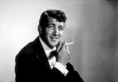

Prediction of Technology in 2021
My prediction of technology in 2021 is that it will be far more advanced than what there is in 2011. I don't know if there will be flying cars or not, but I know that things will be very different. I think the ipod wouldn't be a tablet any more, it would just be an interactive holographic image that could be expanded or shrunken to size. I think cars may be able to drive themselves in the year 2021. You could just get in the car, put in a destination, and just sit back and relax. There is already a car like this that Google has made so maybe that technology will be made public in 2021.
In 2021, warfare will be different. Instead of men being sent to fight and die, robots will take their place. The soldier will control the robot from a safe place away from the battle, and the robot will fight in his place.
Significant Piece of Literature
One significant piece of literature that I like is the book 1984 by George Orwell. This book is about a communist dictatorship in which nearly all aspects of life are run and observed by the government. The people are subordinated to the totalitarian cult of personality of Big Brother, the deified Party leader who rules with a philosophy that decries individuality and reason as thoughtcrimes; thus the people of Oceania are subordinated to a supposed collective greater good. The main character Winston Smith knows that this government isn't right and has to change. This book shows that a socialist dictatorship government doesn't work.
Significant Song
One song that I think is significant is the song Ain't That A Kick In The Head by Dean Martin. I think it's significant because describes the feeling of love in a big-band jazz style. Ain't That a Kick in the Head? is a song which was written in 1960 with music by Jimmy Van Heusen and lyrics by Sammy Cahn. It was first recorded on May 10, 1960 by Dean Martin, with conducting by Nelson Riddle. Martin performed the song in Ocean's 11 in an alternate arrangement featuring vibraphonist Red Norvo and his quartet.
